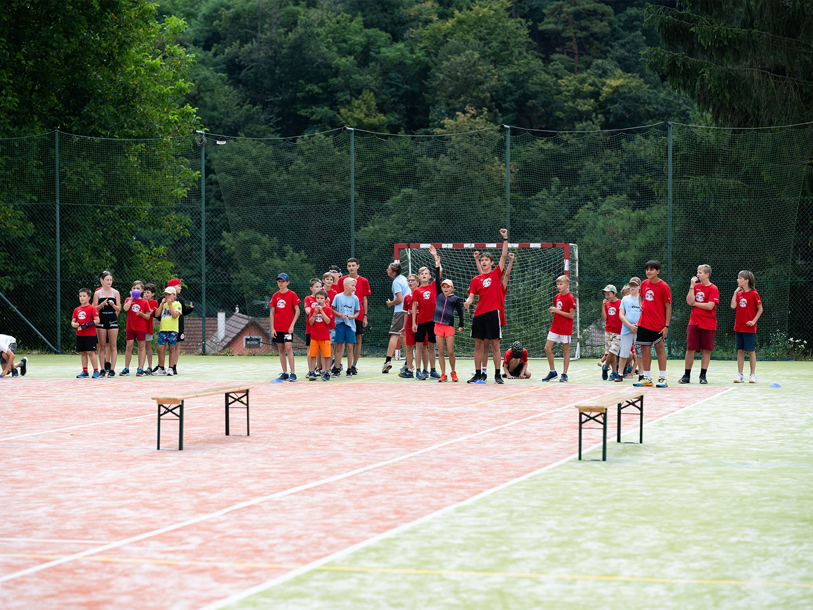
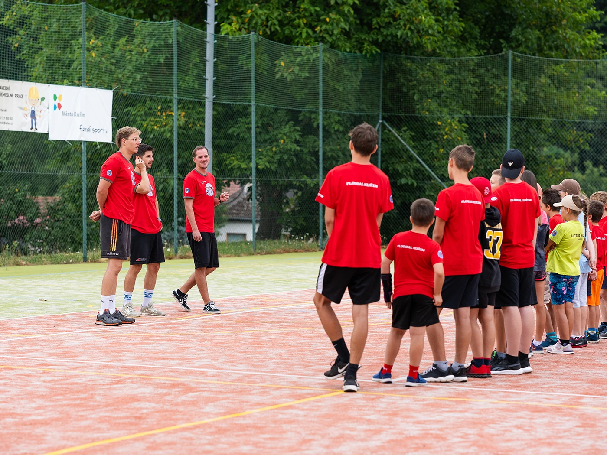
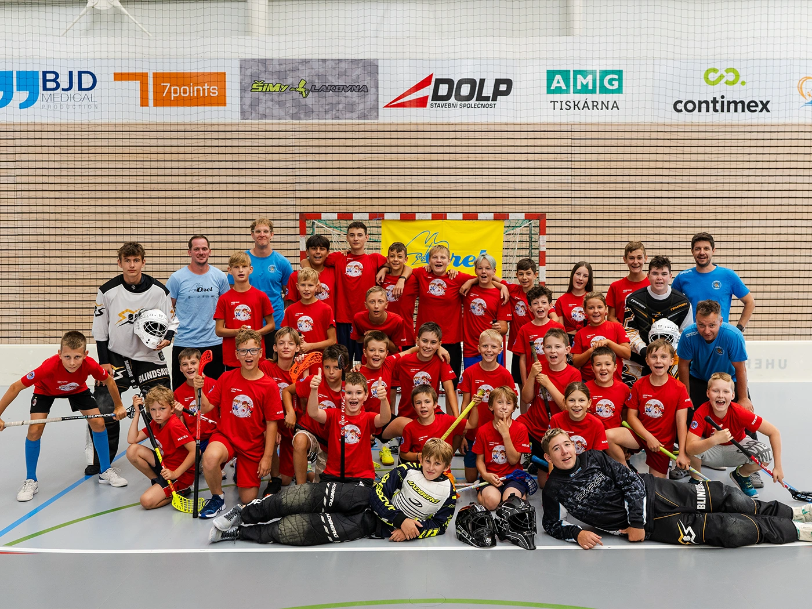

Týden florbalu pro děti od šesti do třinácti let, které k nám chodí na tréninky. Přihlásit můžete i jejich sourozence, výjimečně i kamaráda.



4 500 Kčpřihlášky do 28. 2. 2027

Přihláška zabere pár minut, přihlašovat se dá do 28. 2. 2027.